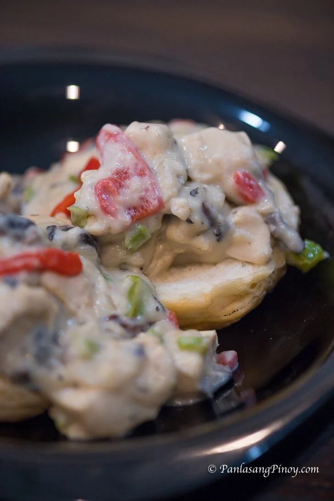

Back to Home
Chicken ala King

Chicken ala King is a rich and creamy chicken dish that
is yummy and easy to make.
Ingredients:
- 1 pound chicken breast
- 1 piece Knorr chicken cube
- 11/2 cup chopped mushrooms
- 1 piece onion chopped
- 1 piece green bell pepper chopped
- 2 ounces pimiento peppers
- 1/2 cup butter
- 7 tablespoons all-purpose flour
- 1 1/3 cups fresh milk
- 1 quart water
- Salt and ground black pepper to taste
Steps:
- Boil water in a cooking pot. Add chicken breast.
Cover and cook in medium heat for 20 to 25 minutes. Remove the
chicken from the pot. Let it cool down. Slice
into cubes. Set aside.
- Melt butter in a pan. Continue to cook in low to
medium heat until butter gets hot.
- Saute onion, green bell pepper, and mushroom.
- Add Knorr Chicken cube. Continue to stir until
all ingredients are well blended.
- Add all-purpose flour. Stir.
- Pour milk into the pot. Stir. Let boil.
- Add cubed chicken and pimiento. Season the chicken ala king
with salt and ground black pepper. Continue to
cook while stirring for 2 minutes or until the sauce thickens.
- Serve. Share and enjoy!
Back to Home